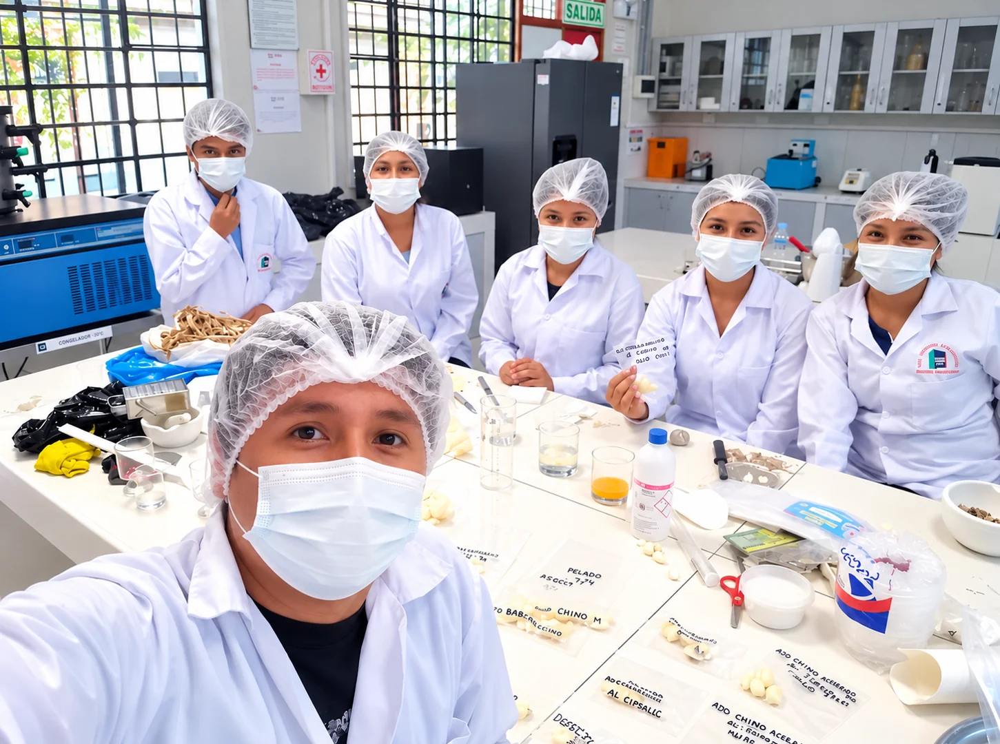

Misión
Conectar valor agrícola con soluciones y oportunidades comerciales.
Presentación corporativa de TOVEN FOODS basada en el enfoque agroindustrial definido hasta ahora.
TOVEN FOODS se presenta como una empresa orientada a la elaboración y distribución de procesos agroindustriales, además de productos primarios como ajo, pimientos, frutas y granos.
La web está diseñada para transmitir profesionalismo, confianza y una experiencia visual moderna.
Conectar valor agrícola con soluciones y oportunidades comerciales.
Consolidar una imagen de empresa agroindustrial confiable y moderna.
Compromiso, presentación profesional, calidad y mejora continua.

Registro real facilitado por la empresa · Manejo de ajos

Conoce al equipo y algunas de las actividades técnicas y operativas vinculadas a TOVEN FOODS.



El ajo comienza su recorrido en el campo. Conoce el entorno agrícola donde se realiza su cosecha, una parte importante de la cadena de trabajo que da origen a nuestras actividades agroindustriales.
CONOCE TOVEN FOODS ↗
Esta página está pensada para que luego puedas incorporar texto validado por el ingeniero, datos de producción, fotos reales de la empresa y logros confirmados sin tener que cambiar el diseño.